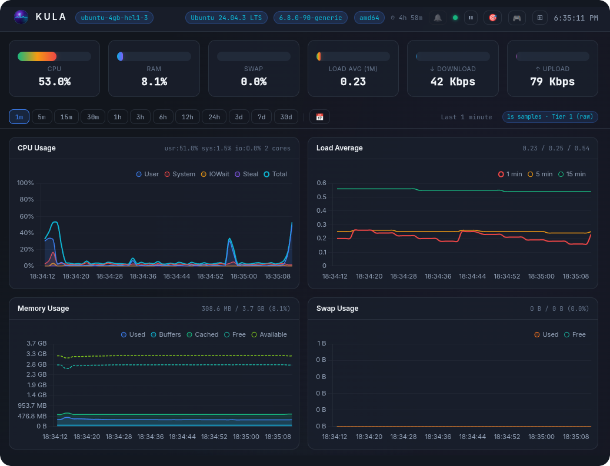
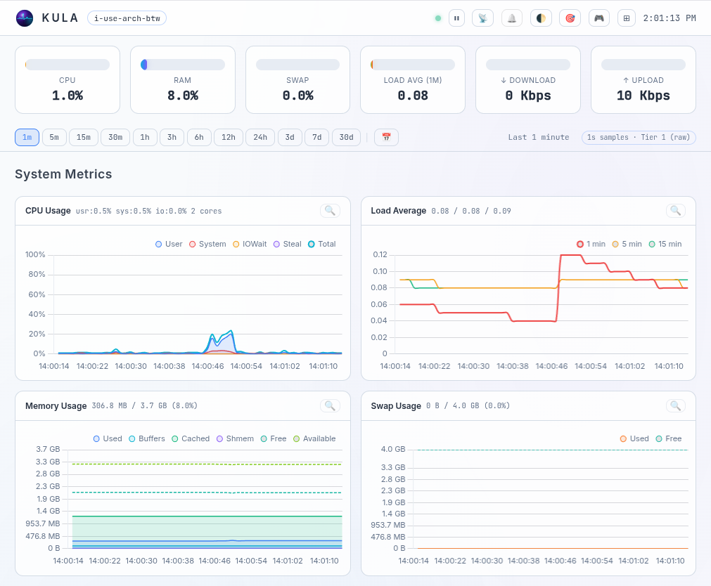

K U L A
Lightweight, self-contained Linux® server monitoring.
Zero dependencies. No external databases. Single binary. Just deploy and go.

Install Kula
sh -c "$(curl -fsSL https://raw.githubusercontent.com/c0m4r/kula/refs/heads/main/addons/install.sh)"Everything in One Binary
Zero Dependencies
No databases, no agents, no runtime. Upload one binary to your server and start monitoring in seconds.
Real-Time Dashboard
WebSocket-powered live charts with Chart.js, SVG gauges, interactive zoom, focus mode, and light/dark themes.
Built-In Storage
Tiered ring-buffer engine with predictable disk usage. 1s, 1m, and 5m resolution tiers — no cleanup needed.
Privacy First
Works on closed networks. No calls to external services. No cloud APIs. No tracking.
Open Source
Kula is free to use and open source. Licensed under AGPLv3. Check the code and contribute on GitHub.
Pure Linux
Reads directly from /proc and /sys every second. Supports amd64, arm64, and riscv64 architectures.
Real-Time Monitoring at a Glance


Comprehensive System Metrics
| Metric | Details |
|---|---|
| CPU | Total usage (user, system, iowait, irq, softirq, steal) + core count |
| Load | 1 / 5 / 15 min averages, running & total tasks |
| Memory | Total, free, available, used, buffers, cached, shmem |
| Swap | Total, free, used |
| Network | Per-interface throughput (Mbps), packets/s, errors, drops; TCP stats; socket counts |
| Disks | Per-device I/O (read/write bytes/s, IOPS); filesystem usage |
| System | Uptime, entropy, clock sync, hostname, logged-in user count |
| Processes | Running, sleeping, blocked, zombie counts |
| Self | Kula's own CPU%, RSS memory, open file descriptors |
| Thermal | CPU and Disk temperatures |